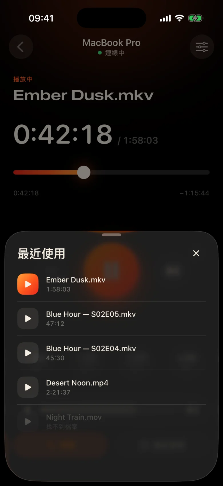
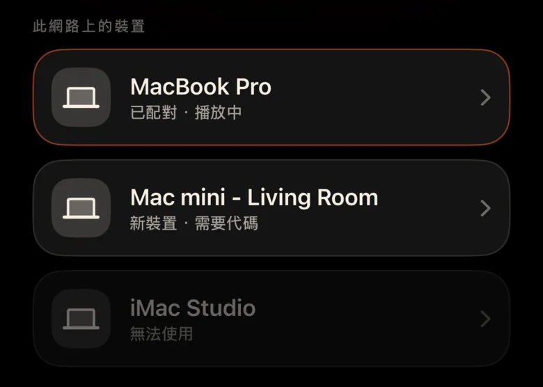
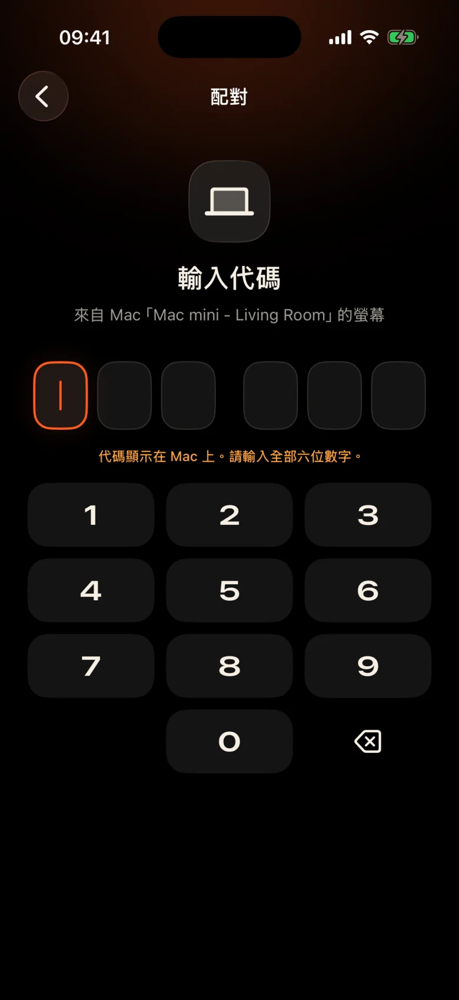

Mac 位於房間對面
它通過牆壁插入投影機。每次停頓都意味著站起來，在黑暗中找到觸控板，瞇著眼睛看著一個小小的控制欄。
Kinrox：點選手中手機的暫停。
它通過牆壁插入投影機。每次停頓都意味著站起來，在黑暗中找到觸控板，瞇著眼睛看著一個小小的控制欄。
Kinrox：點選手中手機的暫停。
一個場景中有人低語，下一個場景中爆炸——有人已經在隔壁房間睡著了。
Kinrox：大拇指下方的音量滑桿。
帶有 IP 位址和密碼的 Web 面板、休眠的瀏覽器標籤、專為辦公桌而不是沙發設計的按鈕。
Kinrox：自行找到您的Mac，與一個代碼配對。

大目標、黑暗溫暖的主題以及每次按下時輕觸的觸覺。您可以在視線不離開影片的情況下使用它。
每個按鈕都夠大，睡眼惺忪時也能輕鬆點中。
漏了一行嗎？一鍵返回。跳過兩個介紹。
Kinrox自己的音量，從0到100。 Mac的系統音量保持不變。
同一資料夾中的上一個和下一個文件，按 Finder 順序。
選擇您之前看過的內容 - 它會在 Mac 上開啟。
將時間軸拖到任意時刻，從沙發上切換全螢幕。
沒有 IP 位址、沒有密碼、沒有帳號。第一個代碼後，您的 iPhone 會自行重新連線。
將檔案拖曳到 Kinrox 或按 ⌘ O。遠端伺服器預設為開啟狀態。
當兩台裝置都使用相同 Wi-Fi 時，Kinrox 會自行顯示。

Mac 顯示的代碼有效期限為兩分鐘。嘗試了三次錯誤，結果就消失了。


Alex’s iPhone 想要控制 Kinrox。請在手機上輸入此代碼。
 代碼將於 1:47 後過期
代碼將於 1:47 後過期
影片就是介面。當您需要時，會出現一層薄薄的玻璃，並在三秒鐘後隱藏起來。

基於 libmpv（mpv 和 IINA 背後的引擎）構建。選擇嵌入或外部音訊和字幕。 VideoToolbox 處理硬體解碼。
Kinrox 將資料夾中的影片排列起來，並在一集結束時開始下一個影片 - “2”在“10”之前，就像 Finder 一樣。
鍵盤⏯鍵、控制中心和正在播放控制Kinrox。最多 20 個最近的文件在開始畫面上等待。
您的 Mac 和 iPhone 直接透過本地網路交換播放指令。您的影片保留在 Mac 上。
透過 Bonjour 發現，僅來自您自己的子網路的連接。公共地址和蜂窩電話均被拒絕。
每個命令都在加密通道中傳輸。配對令牌存在於兩台裝置上的鑰匙圈中。
X25519HKDF-SHA256ChaCha20-Poly1305沒有帳戶或使用情況分析。 Mac 每天檢查公共更新來源，無需唯一識別碼或系統分析。網站沒有分析或 cookies。
遙控器看到的是標題和持續時間，而不是檔案路徑。在 Mac 上已解決開啟最近的檔案的問題。
Kinrox 寫在 Swift 6 和 SwiftUI 上，寫在 libmpv 之上。播放器、遙控器和協定的每一行都在GitHub上。
從原始碼構建# Xcode 26.5, XcodeGen and mpv from Homebrew
brew install xcodegen mpv pkg-config
git clone https://github.com/awaik/Kinrox.git
cd Kinrox
cp -n Config/Signing.local.xcconfig.example \
Config/Signing.local.xcconfig
# Set your team: docs/runbooks/RUNBOOK-BUILD-AND-SIGNING.md
./Scripts/check-env.sh
./Scripts/generate.sh
xcodebuild -workspace Kinrox.xcworkspace \
-scheme PlayerMac -configuration Debug \
-destination 'platform=macOS,arch=arm64' \
-derivedDataPath DerivedData build
open DerivedData/Build/Products/Debug/Kinrox.app當 Mac 和 iPhone 共用 Wi‑Fi 網路時，無需連接網路即可進行播放和遠端控制。 Mac 使用 HTTPS 進行日常更新檢查，並在您選擇安裝時下載更新。
是的。 Kinrox 可在 Mac 顯示的任何內容上播放 - 投影機、透過 HDMI 的電視或與 AirPlay 連接的顯示器。
Macs 和 Apple silicon 在 macOS 14 Sonoma 或更高版本上，以及 iPhones 在 iOS 17 或更高版本上。尚不支援 Intel Macs。
是的。每個 iPhone 與自己的代碼配對一次；最多可同時連接四個遙控器。您可以在播放器設定中撤銷其中任何一項。
是的。在 Mac 上，使用「音訊和字幕」按鈕或「音訊和字幕」選單。選擇嵌入軌道、在嵌套資料夾中尋找外部檔案或關閉字幕。 Kinrox可以記住您下一集的選擇。
什麼也沒有。 Kinrox 在 GNU GPL v3 下免費且開源。